AnyPortrait > マニュアル > ラグドールの実装
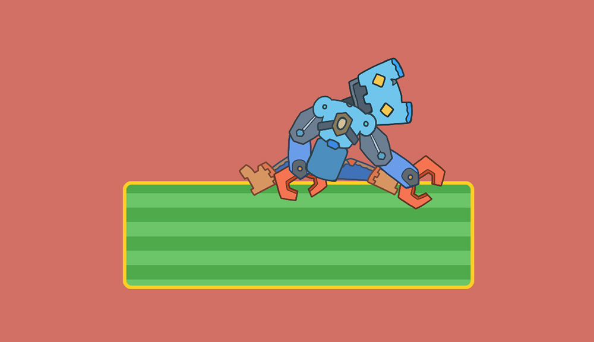
「ラグドール（Ragdoll）」は、キャラクターがぬいぐるみのように力なく動くようにする技術です。
キャラクターのボーンに物理機能を追加し、物理エンジンだけでキャラクターが動くようにするのがこの技法の核心です。
「Unity」でラグドールを実装するには、「Joint」の種類の物理コンポーネントを利用する必要があります。
このページでは、「Hinge Joint 2D」と2D物理コンポーネントをボーンに連携してラグドールを実装する方法について説明します。
まず、1つのボーンにラグドールを適用する方法について説明します。
次に、多くのボーンにラグドールを適用するために私たちのチームが書いたスクリプトを適用する方法について説明します。
メモ
「AnyPortrait」には、「Rigidbody」などの物理コンポーネントとBoneを連動させるためには、特別な実装方法を知る必要があります。
このページの説明を見る前に、「ボーンと物理コンポーネントの連携」（リンク）のマニュアルを最初に読むことをお勧めします。
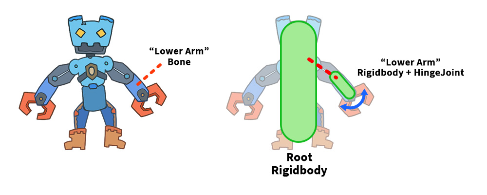
最初の例では、ロボットの片腕にラグドールを適用しましょう。
「ラグドール」効果を実装するための最良の方法は、「ダミーオブジェクト」を作成し、ここに「Hinge Joint 2D」コンポーネントを追加することです。
「Hinge Joint 2D」は親ボーンの「Rigidbody 2D」と接続する必要があります。
親ボーンを持たないこの例では、「ルートとなるGameObject」に接続するだけです。
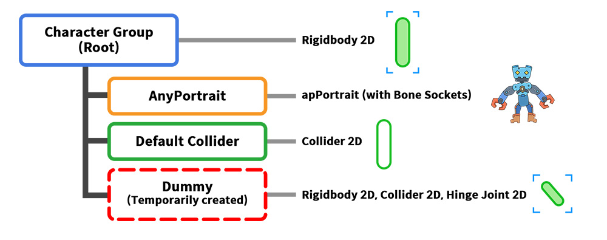
キャラクターは上記のように構成されています。
1. Character Group : キャラクター全体のルートオブジェクトです。 「Rigidbody 2D」コンポーネントを持ちます。
2. AnyPortrait : 「AnyPortrait」で制作されたキャラクターです。
3. Default Collider : キャラクター全体のサイズに合わせて設定された「Collider」を持つオブジェクトです。
4. Dummy : ラグドールの開始時に一時的に生成されるダミーオブジェクトです。ロボットアームに対応し、「Hinge Joint 2D」を含む物理コンポーネントを持っています。
前のページとは異なり、ロボットアームがキャラクターに依存して移動するため、「ダミーオブジェクト」がキャラクターグループ内に含まれることに注意してください。
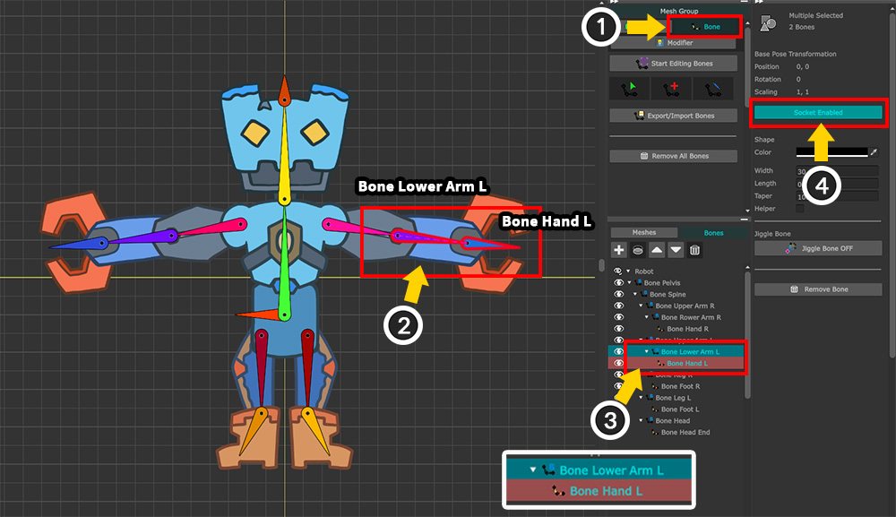
スクリプトを作成する前に「ソケット（Socket）」を有効にします。
(1) 「Bone」タブを選択します。
(2) 対象となるボーンは「Bone Lower Arm L」であり、対象ボーンの長さを計算するために子である「Bone Hand L」も同様に参照する必要があります。
(3) Ctrl キーを押して両方のボーンを選択します。
(4) 「Socket」ボタンを押してソケットを有効にします。
ここで「Bake」を実行し、次のスクリプトを作成します。
using UnityEngine;
using AnyPortrait;
public class v162_HingeJointScript : MonoBehaviour
{
// 「Rigidbody2D」を持つ「apPortrait」の親オブジェクト
public Transform characterTransform;
public Rigidbody2D rootRigidbody;
// 「AnyPortrait」で制作されたキャラクター
public apPortrait portrait;
// 物理シミュレーション状態を示すフラグとシミュレーションに使用されるダミーオブジェクトの「Rigidbody2D」
private bool _isSimulating = false;
private Rigidbody2D _dummyHingeRigidbody = null;
// 初期位置を保存するための変数
private Vector3 _initPosition;
void Start()
{
// 初期位置を保存します。
_initPosition = characterTransform.position;
}
void Update()
{
// Aキーを押すとダミーヒンジが生成され、物理シミュレーションが開始されます。
if (Input.GetKeyDown(KeyCode.A))
{
// ダミーヒンジを生成します。
MakeDummyHinge();
// アニメーションを一時停止します。
portrait.PauseAll();
// 「Rigidbody2D」の制約を解除して、キャラクターが物理的に回転できるようにします。
rootRigidbody.constraints = RigidbodyConstraints2D.None;
}
// Sキーを押すとダミーヒンジを外し、元に戻します。
if (Input.GetKeyDown(KeyCode.S))
{
// ダミーヒンジを取り外します。
RemoveDummyHinge();
// 「Rigidbody2D」の制約をリセットし、キャラクターが回転しないようにします。
rootRigidbody.constraints = RigidbodyConstraints2D.FreezeRotation;
// キャラクターの位置と回転を初期状態に戻し、アニメーションを再生します。
characterTransform.position = _initPosition;
characterTransform.localRotation = Quaternion.identity;
portrait.Play("Anim");
}
// 物理シミュレーションを適用したダミーヒンジの位置と回転を利用して、「Bone Lower Arm L」の回転を更新します。
if (_isSimulating)
{
Vector3 upVectorW = _dummyHingeRigidbody.transform.TransformDirection(Vector3.up);
float angleZ_W = Vector3.SignedAngle(Vector3.up, upVectorW, Vector3.forward);
angleZ_W += 90.0f;
portrait.SetBoneRotation("Bone Lower Arm L", angleZ_W, Space.World);
}
}
void FixedUpdate()
{
// 物理シミュレーションが適用されたダミーヒンジの位置を補正します。
if (_isSimulating)
{
Vector3 bonePosW = portrait.GetBoneSocket("Bone Lower Arm L").position;
Vector3 hingePosW = _dummyHingeRigidbody.position;
// ボーンとダミーヒンジの間の距離が一定以上の場合は、ダミーヒンジの位置を補正します。
if (Vector3.Distance(bonePosW, hingePosW) > 0.1f)
{
_dummyHingeRigidbody.MovePosition(bonePosW);
}
}
}
// ダミーヒンジを生成して物理シミュレーションを開始します。
private void MakeDummyHinge()
{
if (_dummyHingeRigidbody != null)
{
Destroy(_dummyHingeRigidbody.gameObject);
}
_dummyHingeRigidbody = null;
// 「Bone Lower Arm L」と「Bone Hand L」の位置を計算します。
Transform targetSocket = portrait.GetBoneSocket("Bone Lower Arm L");
Transform childSocket = portrait.GetBoneSocket("Bone Hand L");
Vector3 posL_Target = characterTransform.InverseTransformPoint(targetSocket.position);
Vector3 posL_Child = characterTransform.InverseTransformPoint(childSocket.position);
// 初期回転値を計算します。
float angleZ = Vector3.SignedAngle(Vector3.up, posL_Child - posL_Target, Vector3.forward);
// ダミーヒンジオブジェクトを作成し、キャラクターオブジェクトの子に設定した後、初期位置と回転を設定します。
GameObject dummyHingeObj = new GameObject("DummyHinge");
Transform dummyHingeTransform = dummyHingeObj.transform;
dummyHingeTransform.parent = characterTransform;
dummyHingeTransform.localPosition = posL_Target;
dummyHingeTransform.localRotation = Quaternion.Euler(0f, 0f, angleZ);
dummyHingeTransform.localScale = Vector3.one;
// ダミーヒンジに「Rigidbody2D」と「CapsuleCollider2D」を追加します。
_dummyHingeRigidbody = dummyHingeObj.AddComponent<Rigidbody2D>();
_dummyHingeRigidbody.mass = 1.0f;
// 2つのボーンの距離を使って「CapsuleCollider2D」のサイズを設定します。
float hingeLength = Vector3.Distance(posL_Target, posL_Child);
float hingeWidth = hingeLength * 0.3f;
CapsuleCollider2D hingeCollider = dummyHingeObj.AddComponent<CapsuleCollider2D>();
hingeCollider.direction = CapsuleDirection2D.Vertical;
hingeCollider.size = new Vector2(hingeWidth, hingeLength);
hingeCollider.offset = new Vector2(0f, hingeLength * 0.5f);
// ダミーヒンジに「HingeJoint2D」を追加して、キャラクターの「Rigidbody2D」に接続します。
HingeJoint2D hingeJoint = dummyHingeObj.AddComponent<HingeJoint2D>();
hingeJoint.connectedBody = rootRigidbody;
hingeJoint.autoConfigureConnectedAnchor = false;
hingeJoint.anchor = Vector2.zero;
hingeJoint.connectedAnchor = posL_Target;
// 回転角度を制限して、ダミーヒンジが一定の範囲内でのみ回転するように設定します。
Physics2D.SyncTransforms();
JointAngleLimits2D angleLimits = new JointAngleLimits2D();
angleLimits.min = -30.0f + hingeJoint.jointAngle;
angleLimits.max = 30.0f + hingeJoint.jointAngle;
hingeJoint.limits = angleLimits;
hingeJoint.useLimits = true;
_isSimulating = true;
}
// ダミーヒンジを取り外して物理シミュレーションを終了します。
private void RemoveDummyHinge()
{
if (_dummyHingeRigidbody != null)
{
Destroy(_dummyHingeRigidbody.gameObject);
_dummyHingeRigidbody = null;
}
_isSimulating = false;
}
}
ほとんどのコードは、前のマニュアルで紹介したスクリプトとほぼ同じです。
ここでは、ラグドールの実装に関するコードを見てみましょう。
...
// ダミーヒンジを生成します。
MakeDummyHinge();
// アニメーションを一時停止します。
portrait.PauseAll();
// 「Rigidbody2D」の制約を解除して、キャラクターが物理的に回転できるようにします。
rootRigidbody.constraints = RigidbodyConstraints2D.None;
...
ラグドールシミュレーションを開始する要求をするコードです。
後述する「MakeDummyHinge」関数を呼び出し、ルートオブジェクトの「Rigidbody 2D」の「Constraint」をすべて解除します。
これにより、キャラクターがバランスを崩して倒れる演出を作ることができます。
重要なのは、「PauseAll」関数を呼び出してキャラクターのアニメーションを一時停止したことです。
キャラクターのアニメーションを再生し続ける場合は、物理シミュレーションが非常に不安定に動作するので、必ずアニメーションを停止させてください。
...
// 物理シミュレーションを適用したダミーヒンジの位置と回転を利用して、「Bone Lower Arm L」の回転を更新します。
if (_isSimulating)
{
Vector3 upVectorW = _dummyHingeRigidbody.transform.TransformDirection(Vector3.up);
float angleZ_W = Vector3.SignedAngle(Vector3.up, upVectorW, Vector3.forward);
angleZ_W += 90.0f;
portrait.SetBoneRotation("Bone Lower Arm L", angleZ_W, Space.World);
}
...
ダミーヒンジオブジェクトの動きをフレームごとにキャラクターのボーンに適用するコードです。
「Hinge Joint 2D」の場合、独立して移動せず、親に依存して回転のみするため、「SetBoneRotation」のみ呼び出します。
void FixedUpdate()
{
// 物理シミュレーションが適用されたダミーヒンジの位置を補正します。
if (_isSimulating)
{
Vector3 bonePosW = portrait.GetBoneSocket("Bone Lower Arm L").position;
Vector3 hingePosW = _dummyHingeRigidbody.position;
// ボーンとダミーヒンジの間の距離が一定以上の場合は、ダミーヒンジの位置を補正します。
if (Vector3.Distance(bonePosW, hingePosW) > 0.1f)
{
_dummyHingeRigidbody.MovePosition(bonePosW);
}
}
}
以前のマニュアルと最も大きく異なるコードです。
物理演算が実行される「FixedUpdate」では、ダミーオブジェクトの位置をキャラクタのボーンに合わせて補正する必要があります。
通常の場合は「AnyPortrait」のボーンと「ダミーオブジェクト」は親に依存するという共通点があるので、あえて位置を補正する必要はありません。
ただし、「Hinge Joint 2D」が親に強く接続するように設定しても、強すぎる力を加えたり、衝突エラーが発生した場合、ダミーオブジェクトが親（ここでは「Character Group」）と分離する問題が発生することがあります。
したがって、ボーンの位置とダミーオブジェクトの位置を比較し続けてエラーが発生した場合は、ダミーオブジェクトを強制的に移動する必要があります。
ここでは「0.1f」の位置の違いを検出するようにしましたが、この値を小さすぎると、「MovePosition」関数が頻繁に呼び出される可能性があります。
「MovePosition」が多すぎると、ダミーオブジェクトの速度に影響を与えるため、動きが自然になりません。
したがって、テストを行い、適切な値を入力する必要があります。
...
// ダミーヒンジオブジェクトを作成し、キャラクターオブジェクトの子に設定した後、初期位置と回転を設定します。
GameObject dummyHingeObj = new GameObject("DummyHinge");
Transform dummyHingeTransform = dummyHingeObj.transform;
dummyHingeTransform.parent = characterTransform;
...
ダミーオブジェクトを生成するとき、前のマニュアルとは異なり、キャラクターのルートに該当する「characterTransform」の子になるように設定してください。
...
// ダミーヒンジに「HingeJoint2D」を追加して、キャラクターの「Rigidbody2D」に接続します。
HingeJoint2D hingeJoint = dummyHingeObj.AddComponent<HingeJoint2D>();
hingeJoint.connectedBody = rootRigidbody;
hingeJoint.autoConfigureConnectedAnchor = false;
hingeJoint.anchor = Vector2.zero;
hingeJoint.connectedAnchor = posL_Target;
// 回転角度を制限して、ダミーヒンジが一定の範囲内でのみ回転するように設定します。
Physics2D.SyncTransforms();
JointAngleLimits2D angleLimits = new JointAngleLimits2D();
angleLimits.min = -30.0f + hingeJoint.jointAngle;
angleLimits.max = 30.0f + hingeJoint.jointAngle;
hingeJoint.limits = angleLimits;
hingeJoint.useLimits = true;
...
ダミーオブジェクトに「Hinge Joint 2D」コンポーネントを追加するコードです。
ここでは親ボーンが存在しないので、キャラクターのルートオブジェクトである「rootRigidbody」と連結するように作成します。
ラグドールの親ボーンがある場合は、親ボーンに対応する「Rigidbody」を接続する必要があります。
さらに、ダミーオブジェクトの回転角度を制限する必要がある場合は、上記のようにコードを書くだけです。
「JointAngleLimits2D」を適用する前に、「Physics2D.SyncTransforms()」を最初に呼び出す必要があることに注意してください。
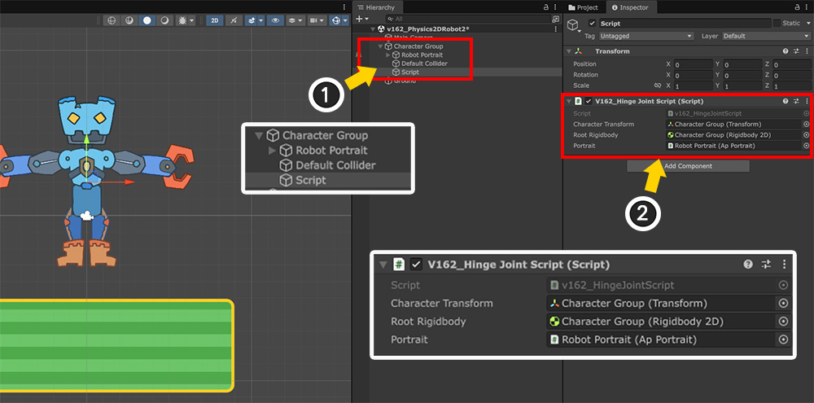
作成したスクリプトをシーンに適用しましょう。
(1) 「GameObject」を新規作成します。
(2) 生成された「GameObject」に「スクリプト」を追加し、メンバー変数に対応するオブジェクトを適切に割り当てます。
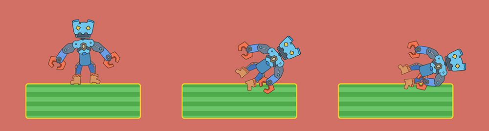
ゲームを実行し、スクリプトに合わせて A キーを押してみましょう。
上記のように、ロボットのキャラクターがアニメーションを止めて横に倒れるのを見ることができます。
ロボットが倒れて腕が自然に折れるのも見られます。
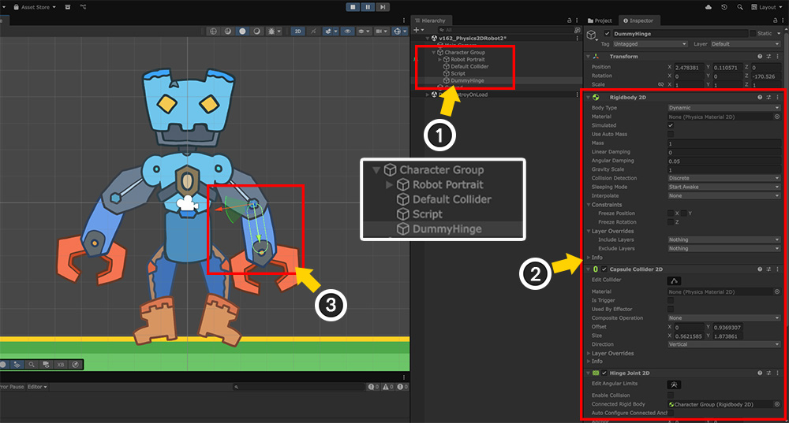
この状態でゲームを一時停止し、どのような状況が発生したかを見てみましょう。
(1) ラグドールが有効になると、「DummyHinge」という名前のダミーオブジェクトがキャラクターグループ内に生成されます。
(2) このダミーオブジェクトには、「Rigidbody 2D」、「Capsule Collider 2D」、および「Hinge Joint 2D」コンポーネントが追加されています。
(3) シーンで確認すると、ダミーオブジェクトと物理コンポーネントがターゲットボーンに合わせて作成され、ボーンがダミーオブジェクトと同期して移動していることがわかります。
一つのボーンを「Hinge Joint 2D」と連動する方式を応用すればラグドールを実装できるはずです。
複数のボーンに対してダミーオブジェクトを作成し、物理シミュレーションを実行するように上記のスクリプトを変更します。
ただし、修正されたスクリプトの分量が多すぎるため、このページで紹介するのは難しく、私たちがあらかじめ作成したスクリプトを提供いたします。
「Unitypackage」ファイルをダウンロードしてプロジェクトにインポートすると、1つのスクリプトが追加されます。
このスクリプトを使ってラグドールを実装しましょう。
参考
提供されるスクリプトは、「AnyPortrait v1.6.2」と「Unity 6.2」に基づいて作成されました。
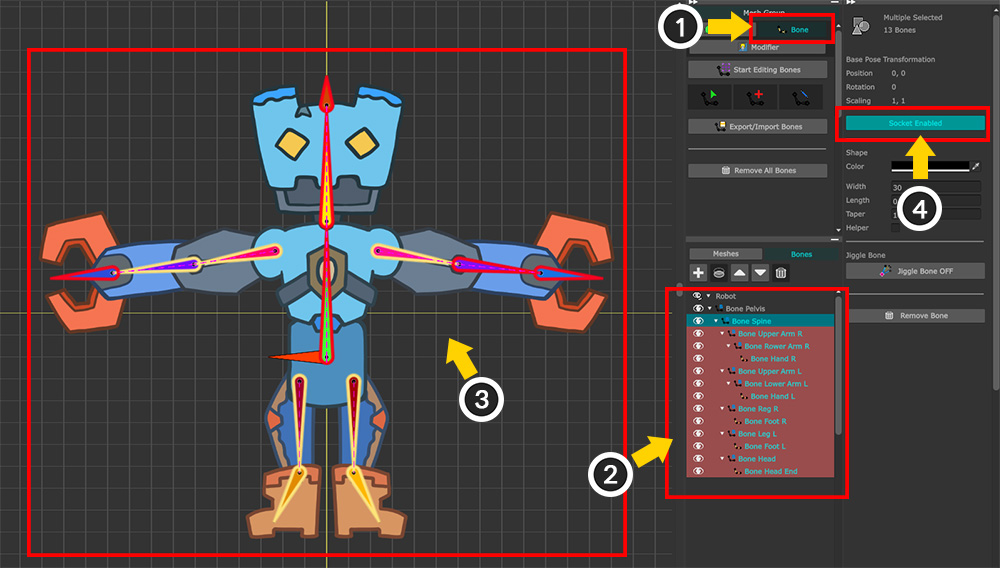
ロボットキャラクターのほとんどのボーンにダミーオブジェクトを作成する準備をする必要があります。
(1) 「Bone」タブを選択します。
(2) Shift キーまたは Ctrl キーを押して、ほとんどのボーンを選択します。また、ターゲットの子ボーンも同様に選択します。
(3) ほぼすべてのボーンが選択された状態です。
(4) 選択したボーンの「ソケット（Socket）」オプションを一括で有効にします。
参考
この例では、ルートボーン「Bone Pelvis」を選択から除外しました。
これは、ルートボーンとメッシュが関連付けられておらず、その役割をルートオブジェクト（「Character Group」）が置き換えたためです。
作業者ごとにキャラクターの構造が異なるので、キャラクターの構造に合わせて適切に設定して実装してください。
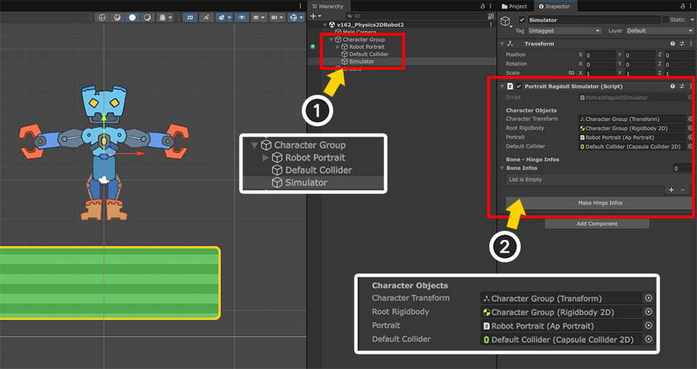
「Bake」を実行してシーンに戻ります。
(1) 「GameObject」を新規作成します。
(2) 作成した「GameObject」にダウンロードした「Portrait Ragdoll Simulator」スクリプトを追加します。
(3) 「Character Objects」項目のメンバー変数にオブジェクトを適切に割り当てます。
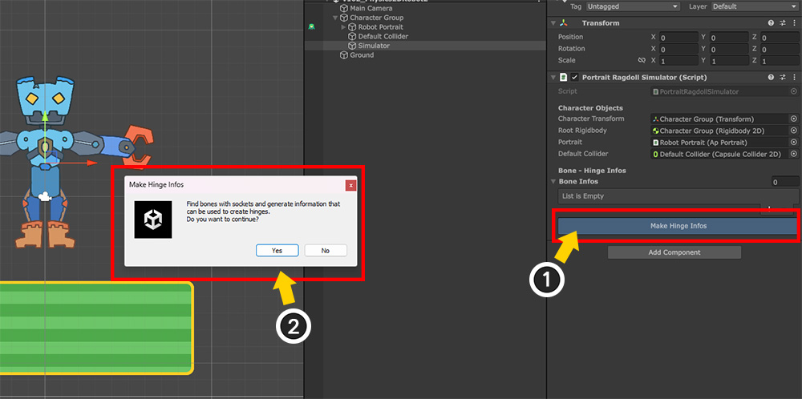
このスクリプトは、「Bone Infos」という項目にbone情報を入力すると、この情報に基づいてダミーオブジェクトを生成します。
キャラクターのすべてのボーンの名前を覚えて1つずつ入力してもいいのですが、これはとても面倒です。
そのため、「ソケットオプションが有効になっているすべてのボーンを見つけて自動的に情報を入力する機能」を実装しておきました。
(1) 「Make Hinge Infos」ボタンを押します。
(2) 案内メッセージを確認したら、「Yes」ボタンを押します。
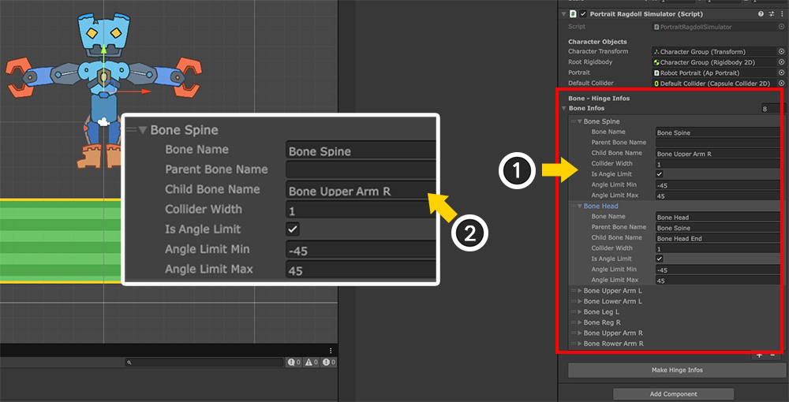
ソケットが有効なボーンを対象に情報が自動的に入力されます。
ただし、ボーンの構造上、一部の情報が誤って入力されることがありますので、一つずつ確認してください。
(1) 例えばこのキャラクターの場合、「Bone Spine」の一部項目が誤って入力された状態です。
(2) 「Child Bone Name」項目に「Bone Upper Arm R」が入力された状態で、このように入力されると、胴体に対応するダミーオブジェクトが右肩方向に傾いて生成されます。
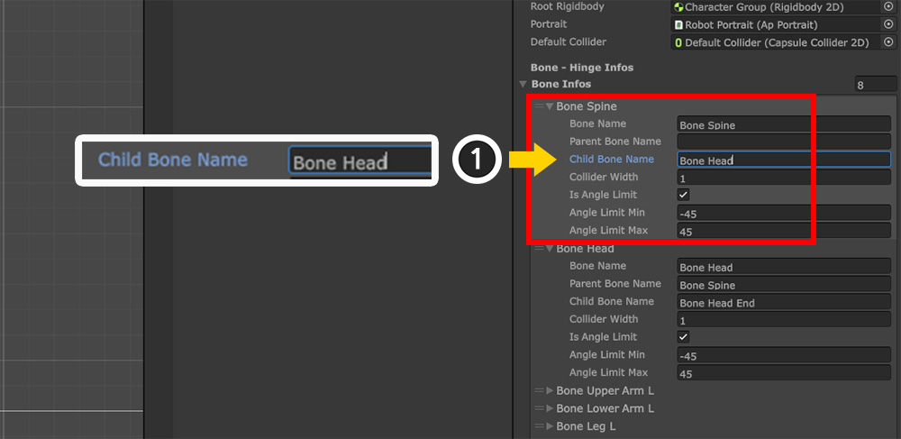
(1) 「Bone Spine」の終点に該当する本人「Bone Head」の名前を「Child Bone Name」に直接入力しましょう。
「Bone Infos」オプションの各項目は次のとおりです。
1. Bone Name : ダミーオブジェクトが作成されるターゲットボーンの名前。
2. Parent Bone Name : 「Hinge Joint 2D」の親として接続する親ボーンの名前です。親ボーンを指定しない場合、キャラクターのルートオブジェクトに連結されます。
3. Child Bone Name : ターゲットボーンの終点の位置を計算するために参照する子ボーンの名前です。空にしてはいけません。子ボーンのうち、ターゲットボーンの終点に最も近いボーンを入力する必要があり、通常はコライダーが生成されます。
4. Collider Width : 「Collider」の幅、つまり「SizeのX値」を指定します。
4. Is Angle Limit : ダミーオブジェクトの回転範囲を制限できます。
5. Angle Limit Min/Max : ダミーオブジェクトの回転範囲です。 ラグドール作成時の角度に基づいて範囲を指定します。
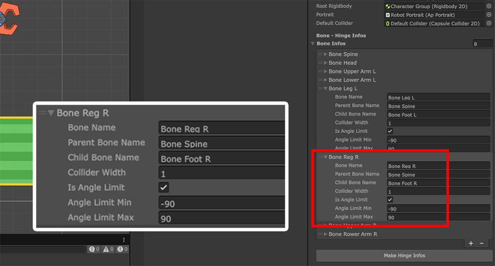
他の生成情報を確認しながら、適切に属性を変更します。
上記のように回転範囲を変更すると、より自然なラグドールを作成できます。
シミュレータスクリプトはそれ自体では動作しません。
別のスクリプトを作成してシミュレーションを実行しましょう。
using UnityEngine;
using AnyPortrait;
public class v162_RagdollScript : MonoBehaviour
{
// 「Rigidbody2D」を持つ「apPortrait」の親オブジェクト
public Transform characterTransform;
// 「AnyPortrait」キャラクターとラグドールシミュレータ
public apPortrait portrait;
public PortraitRagdollSimulator ragdollSimulator;
// 初期位置に戻すための変数
private Vector3 _initialPosition;
void Start()
{
// 物理シミュレータと「AnyPortrait」キャラクターを初期化します。
portrait.Initialize();
ragdollSimulator.Initialize();
// 初期位置を保存します。
_initialPosition = characterTransform.position;
}
void Update()
{
// Aキーを押すとラグドールシミュレーションが始まります。
if (Input.GetKeyDown(KeyCode.A))
{
// アニメーションを一時停止します。
portrait.PauseAll();
// ラグドールシミュレータを起動します。
ragdollSimulator.StartSimulate();
}
// Sキーを押すと物理シミュレーションを停止し、元に戻します。
if (Input.GetKeyDown(KeyCode.S))
{
// アニメーションをもう一度再生します。
portrait.Play("Anim");
// ラグドールシミュレータを停止します。
ragdollSimulator.StopSimulate();
// キャラクターの位置と回転を初期状態に戻します。
characterTransform.position = _initialPosition;
characterTransform.rotation = Quaternion.identity;
}
}
}
「ragdollSimulator.Initialize()」を呼び出す前に、最初に「portrait.Initialize()」を呼び出して正常に初期化を進める必要があります。
その後、「ragdollSimulator.StartSimulate()」関数と「ragdollSimulator.StopSimulate()」を使ってシミュレータをオンまたは終了します。
ラグドールシミュレータを実行するときは、アニメーションを一時停止してください。
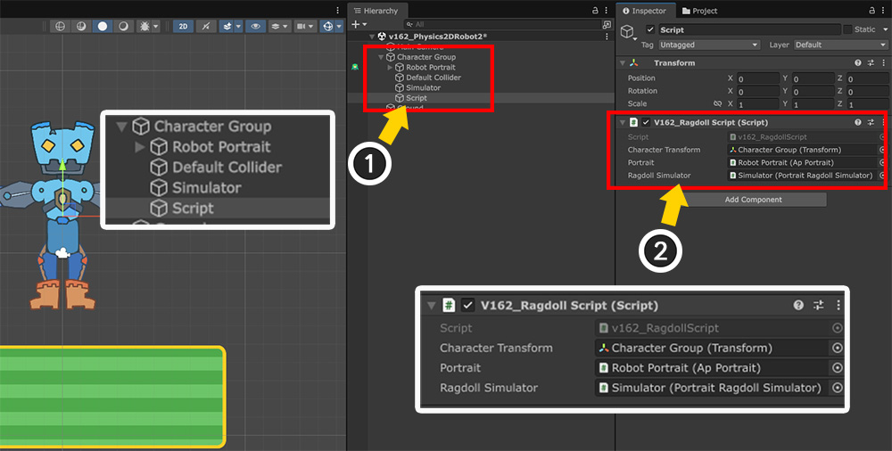
ラグドールシミュレータを実行するスクリプトまで作成したので、これをシーンに適用してみましょう。
(1) 新しい「GameObject」を作成します。
(2) 作成したスクリプトを追加し、メンバ変数に対象を適切に割り当てます。
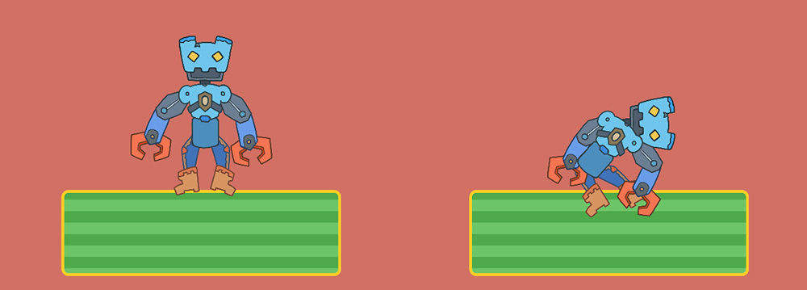
それではゲームを実行しましょう。
A キーを押すとラグドールがアクティブになり、キャラクターが力なく床に倒れるのを見ることができます。
ここでいくつかの修正を加えましょう。
現在作成されているダミーオブジェクト間の衝突が発生し、関節が回転しにくいようです。
実装意図によって、キャラクターの関節は互いに衝突しないように作らなければならない時もあります。
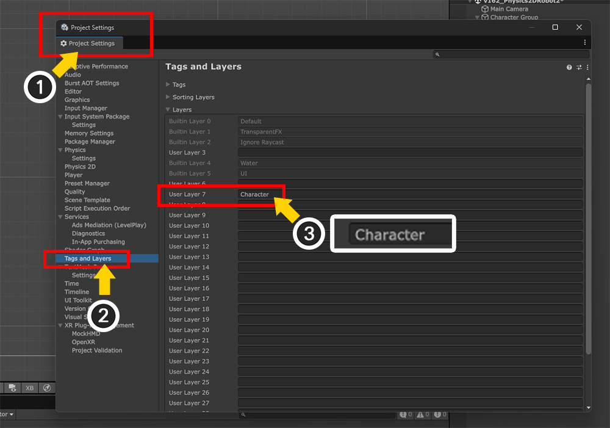
(1) 「Project Settings」を開きます。
(2) 「Tags and Layers」を選択します。
(3) 「Layers」にキャラクター専用の新しいレイヤーを追加します。ここでは「Character」という名前のレイヤーを追加しました。
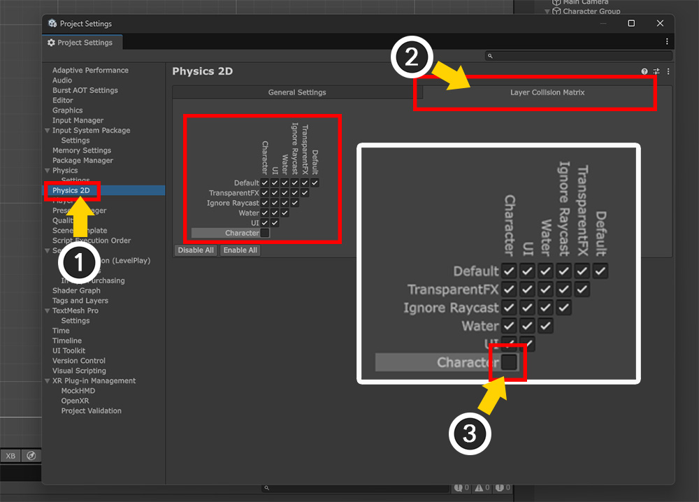
(1) 「Project Settings」の「Physics 2D」を選択します。
(2) 「Layer Collision Matrix」タブを選択します。
(3) レイヤ間の衝突の有無で「Character - Character」のチェックを解除します。
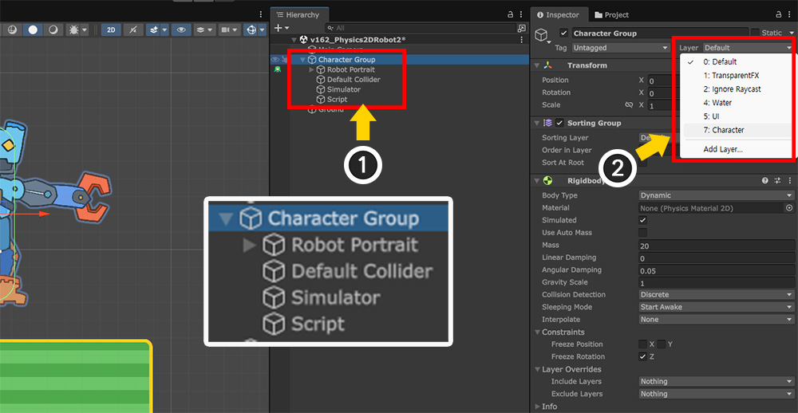
(1) キャラクターのルートオブジェクトを選択します。
(2) 「Layer」を追加したばかりの「Character」に変更して適用します。
ラグドールシミュレータスクリプトには次のコードがあり、生成されたダミーオブジェクトはルートオブジェクトのレイヤと同じ値を持ちます。
...
GameObject hingeGO = new GameObject(info.boneName + "_Hinge");
...
hingeGO.layer = characterTransform.gameObject.layer;
...
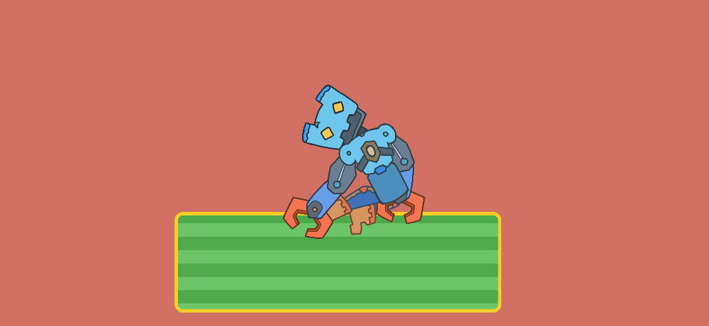
それでは、ゲームを実行して再びラグドールをオンにしましょう。
キャラクターの各関節が他の関節と衝突しないので、より多くの曲がりを見ることができます。
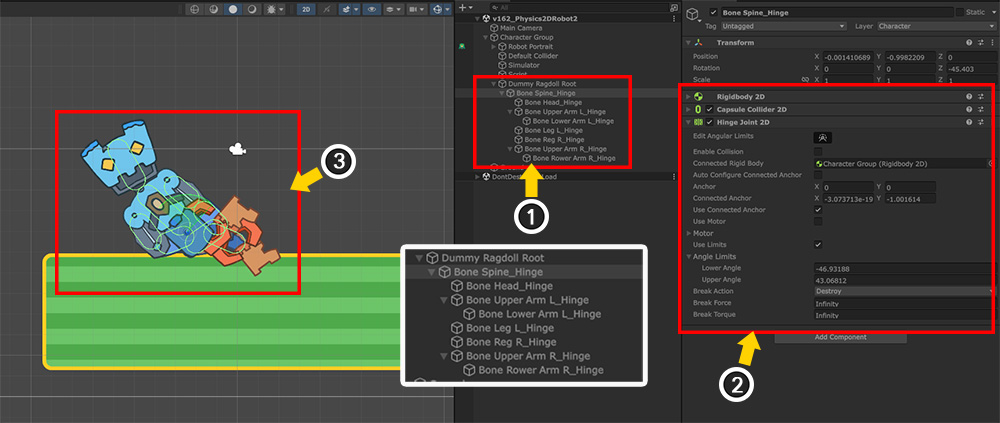
最後に、ラグドールシミュレータが動作しているときにシーンでどのような状況が発生するかを確認します。
(1) ラグドールシミュレータがオンになると、ダミーオブジェクトはボーンの構造と同様に生成されます。
(2) ダミーオブジェクトのうち「Ragdoll Root」を除く各ダミーオブジェクトには、「Rigidbody 2D」、「Capsule Collider 2D」、「Hinge Joint 2D」コンポーネントが追加されています。
(3) キャラクターとダミーオブジェクトが同期して動いているのがわかります。
提供されるスクリプトは基本的な機能のみを提供し、複数のルートユニットがある場合などをすべてサポートするわけではありません。
私たちがスクリプトにコメントを詳細に書いたので、プロジェクトに合わせて修正して使用してください。
このマニュアルについて私たちのチームにご意見をいただいたら、より便利に機能を実装できるように改善してみましょう。